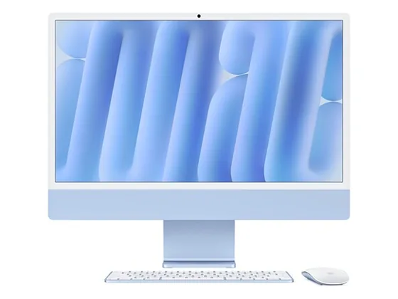

Dell 24 Tout-en-un : avis, tests et prix
Le verdict en une phrase. Un tout-en-un abordable avec un écran aux couleurs vives, un bon son et une webcam efficace, selon PCMag.
N° 3 sur 10 dans le top 10 ordinateurs tout-en-un.

Pour qui ?
Vous voulez un tout-en-un abordable, bon en visio : son et webcam de qualité.
Vous voulez un grand écran ou des performances élevées.
Le consensus de la presse
Une seule note chiffrée à ce jour : 7,0/10, attribuée par PCMag. À lire comme un avis isolé, pas comme un consensus.
Où l'acheter
La configuration peut différer d'un marchand à l'autre : vérifiez la fiche avant d'acheter. Seuls les liens Amazon sont affiliés à ce jour ; les autres sont de simples liens directs. Aucun n'influence les notes ni le classement.
Tous les tests recensés
Chaque ligne renvoie vers le test d'origine. Les notes sont converties sur 10 ; « test » signale un article sans note chiffrée. Notre méthode.
- PCMag7,0
Source du relevé : Test PCMag.
Les alternatives pour le même usage
Tout le top 10 →
Apple iMac 24" M4Le tout-en-un le plus abouti : écran 4,5K aux belles couleurs, puce M4 instantanée et design inimitable. N° 2 · Le haut de gamme Windows Lenovo Yoga AIO 32Écran 31,5 pouces superbe, design travaillé et très bon son : le tout-en-un Windows le plus ambitieux, noté 9/10 dans sa version précédente.
N° 4 · Le familial
Lenovo Yoga AIO 32Écran 31,5 pouces superbe, design travaillé et très bon son : le tout-en-un Windows le plus ambitieux, noté 9/10 dans sa version précédente.
N° 4 · Le familial
 Lenovo IdeaCentre AIO 27Un tout-en-un 27 pouces économe. PCMag et CNET regrettent sa définition Full HD et sa webcam.
Lenovo IdeaCentre AIO 27Un tout-en-un 27 pouces économe. PCMag et CNET regrettent sa définition Full HD et sa webcam.
Questions fréquentes
Que pense la presse de l'ordinateur Dell 24 Tout-en-un ?
La note presse moyenne est de 7,0/10, calculée sur 1 note. Un tout-en-un abordable avec un écran aux couleurs vives, un bon son et une webcam efficace, selon PCMag.
Quels sont les points faibles relevés par les tests ?
Performances moyennes ; Écran 24" Full HD seulement.
À qui s'adresse le modèle Dell 24 Tout-en-un ?
Vous voulez un tout-en-un abordable, bon en visio : son et webcam de qualité. À éviter si : vous voulez un grand écran ou des performances élevées.
Où l'acheter, et à quel prix ?
Prix relevés le 02/10/2026 : 649 € chez Amazon. Les prix changent vite et la configuration peut différer d'un marchand à l'autre : seul le prix affiché par le marchand fait foi.